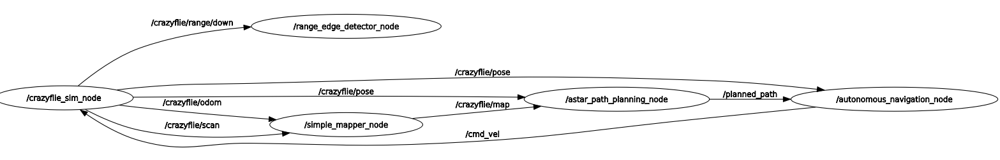

×

MEC 569 Aerial Robotics - Resource-constrained path planning and obstacle avoidance on Crazyflie 2.1
Autonomous navigation on a Crazyflie 2.1 — a 27 gram quadcopter with a four-point LiDAR deck and almost no compute. Built for MEC 569 Aerial Robotics, Fall 2025. The platform cannot run SLAM onboard, so sensor data streams to a ground station that does the mapping, planning, and trajectory generation and sends control commands back.

Four range readings per scan is very little to map with. The SLAM pipeline fuses them with IMU odometry into a 2D occupancy grid, updating at control-loop rate and republishing corrected transforms to absorb drift.
D* Lite replans incrementally from the existing path. Plain A* ignores where the drone is already heading and will happily command a reversal that destabilises it; D* Lite avoids that and replans 20% faster.
Waypoints become minimum-snap trajectories from 7th-degree polynomials, feeding position and velocity setpoints to a cascaded controller — inner loop on attitude, outer loop on velocity.
Battery life caps you at a few minutes of flight per charge, so every flight is recorded to ROS2 bags and replayed deterministically on the ground. Nearly all tuning happened offline rather than in the air.
The drone navigates obstacle courses autonomously, building its map as it goes and replanning when the environment changes. D* Lite cut replanning time 20% against A*, and the map held real-time updates at control-loop frequency throughout.
Mapping is 2D, so obstacles are treated as infinite vertical columns — the drone cannot fly over anything. Compute stays offboard, which ties the vehicle to radio range. The obvious extensions are a 3D occupancy grid and visual odometry to thicken up the sparse LiDAR returns.